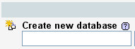
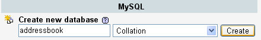
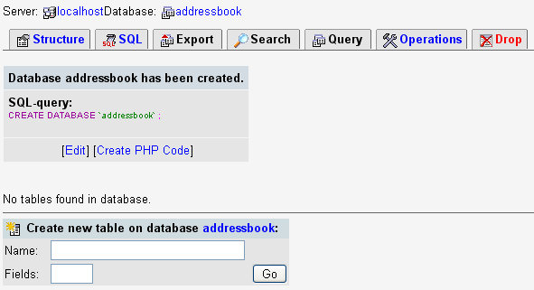
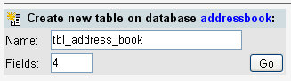
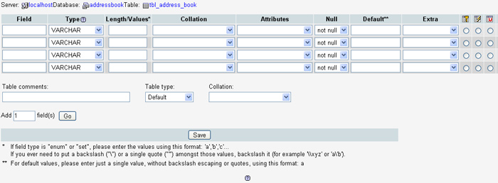

Create a database with phpMyAdmin
You can create all of your database tables and queries using PHP code. But before doing that, it's a good idea to get an understanding of just what it is you'll be creating. If you're new to the world of databases, then here's a simple primer.
What is a database and what do they look like?
A database is a way to store lots of information. You might want to store the names and addresses of all your contacts, or save usernames and passwords for your online forum. Or maybe customer information.
When you create a database, you're creating a structure like this:

The columns (ID, Title, First_Name, Surname) are called Fields. The rows are called Records. Each record is a separate entry.
In a database, you save the information in a Table. A single database can contain many tables, and they can be linked together. When the tables are linked together, it's said to be a relational database. If you just have a single table in your database, then it's called a flat-file database. Flat-file database are easier to create and understand, so we'll start by creating one of these using phpMyAdmin.
So bring up phpMyAdmin, if you haven't already done so.
Although it looks a bit muddled, the part to concentrate on is the textbox
under the words create new database, as in the next image:

This is where you type a name for your database. We're going to create a simple Address Book, so type that into the textbox:

After you have typed a name for your new database, click the "Create" button. You will be taken to a new area:

In this new area, you can create a Table to go in your database. At the moment, as it says, there are No tables found in the database. But the database itself has been created.
To create a new table, type a name for it in the box at the
bottom. You can also type a number for the Fields textbox. The fields
are the columns, remember, and will be things like first_name, surname, address,
etc. You can always add more later, but just type 4 in there. In fact, type
it out exactly as it is below:

When you've finished, click the Go button. Another, more complex, area will appear:

In this new area, you set up the fields in your database. You can specify whether a field is for text, for numbers, for yes/no values, etc. We'll see how to do that in the next part.